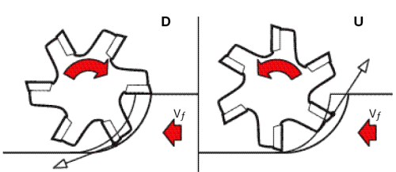

|
2.4. Örnek bir uygulama
Efektif çap, efektif kesme hýzý, kesme kuvveti ve birim zamanda kaldýrýlan talaþ hacmiyle ilgili 2 durumdan oluþan bir örnek ve hesaplamalar sonucunda ulaþýlan sonuçlar aþaðýda sunulmuþtur.
1. durum |
2. durum |
Vc=300 m/dak |
Vc= 300 m/dak |
fZ = 0.078 mm/diþ |
fZ = 0.078 mm/diþ |
Zn = 4 |
Zn = 4 |
Dc = 10 |
Dc = 10 |
ap, AD= 0.3 |
ap, AD = 0.6 |
ae, RD = 0.5 |
ae, RD = 0.5 |
Dw=? n=? Vf=? Q=? Fmax=?
1. durum için çözümler;
(1) nolu formülden Dw = 3.41 mm,
(2) nolu formülden n = 28004 dev/dak,
Vf = 8737 mm/dak,
| Q = (ae x ap x Vf) / 1000 |
|
(5) |
Q = 1.31 cm^3/dak,
(3) no'lu formülden Fmax = 201.42 N
2. durum için çözümler;
Dw = 4.74 mm,
n = 20146 dev/dak,
Vf = 6286 mm/dak,
Q = 1.88 cm3 / dak,
Fmax = 362.4 N
Yukarýdaki hesaplamalar ýþýðýnda aþaðýdaki sonuçlara ulaþýlabilir:
- Elde edilen devir ve ilerleme miktarlarý çok yüksek olup ancak yüksek hýz iþleme tezgahlarýnda elde edilebilir. Yüksek hýz iþleme tezgahlarýnda yaygýn olarak küresel takýmlarýn kullanýlmasýnýn sebeplerinden bir tanesi de efektif kesme hýzýndan yararlanarak daha verimli bir iþleme yapýlabilmesidir.
- Bütün iþleme þartlarý sabit tutulup talaþ derinliði 2 katýna çýkartýldýðý halde Dw çapý doðru orantýlý olarak 2 kat artmamaktadýr. Bunun sebebi takým radyüsünün bilindiði üzere dairesel bir þekilde olmasýdýr.
- Talaþ derinliði 2 kat arttýrýldýðý halde Dw çapýnýn 2 kat artmamasý sonucunda toplam talaþ hacmi (Q) ndeki artýþ %44 seviyelerindedir.
- Q miktarýndaki artýþ %44 olduðu halde Fmax kuvvetindeki artýþ %80 civarýndadýr. Buradan çýkarýlacak sonuç; küresel takýmlarda talaþ derinliðinin arttýrýlmasýnýn olumlu deðil, olumsuz sonuçlar doðurduðudur.
Bu tür takýmlarla iþleme yapýlýrken mümkün mertebe Dw çapý hesaplanmalý ve bu deðere göre devir-ilerleme miktarlarý ayarlanmalýdýr. Özel uygulamalar hariç az talaþ derinliði ile yüksek devir ve ilerlemeler altýnda iþleme yapýlmalýdýr. Aksi taktirde takým kýrýlmasýnýn ve çabuk takým aþýnmasýnýn önüne geçmek mümkün olmamaktadýr.
3. Ýþleme yönü
Prensipte freze dönerken iþ parçasý frezeye doðru ilerler (veya tersi) . Talaþ kaldýrma iþlemi frezenin iþ parçasýna göre dönüþ yönüne baðlý olarak iki þekilde gerçekleþtirilir. Ýþ parçasý, freze dönüþ yönünün tersine doðru veya dönüþ yönüyle ayný yönde ilerler. Bu iki durum arasýndaki fark frezelemede çok önemlidir ve iþlemi önemli ölçüde etkiler. Dönüþ yönüne göre ilerleme yönündeki farklýlýk kesme iþleminin baþlangýcýndaki ve bitiþindeki koþullarý belirler [8].

Resim 10. Ayný yönlü frezeleme (DM) - ters yönlü frezeleme (UM) [9]
Ayný yönlü frezeleme esnasýnda;
- Talaþ kalýnlýðý maksimum deðerde baþlar ve zamanla azalýr,
- Takýmda daha az aþýnma olur ve takým ömrü yaklaþýk %50 fazladýr,
- Daha iyi yüzey kalitesi elde edilir,
- Daha az kesme kuvveti oluþur.
Ters yönlü frezeleme esnasýnda;
- Talaþ kalýnlýðý "0" dan baþlar ve zamanla artar,
- Takým aþýnmasý fazladýr,
- Sürtünme kuvvetleri ve kesme kuvvetleri yüksektir,
- Yüzey kalitesi daha düþüktür [10].
Ayný yönlü frezeleme esnasýnda takým, iþ parçasýný altýna almaya çalýþmaktadýr. Bu sebepten ötürü, bu frezeleme türünde tezgah tabla milinde minimum boþluk olmasý gerekmektedir. Klasik tezgahlar bu iþleme türü için uygun deðildir. Ayný yönlü frezeleme yönteminde takýmýn yüksek talaþ kalýnlýðý ile parçaya temas etmesi bu yöntemi döküm ve sertleþtirilmiþ çeliklerin iþlenmesinde mümkün kýlmamaktadýr.
Ters yönlü frezeleme yöntemi ise döküm ve sertleþtirilmiþ çeliklerin kaba pasolarýnda oldukça verimli bir þekilde kullanýlabilir [3, 8, 9, 10].
Sonuç olarak, sert tabakasý olmayan parçalar için ayný yönlü iþleme yöntemi daha üstündür. Takým tezgahýnýn, baðlama elemanlarýnýn ve iþ parçasýnýn uygun olduðu sürece ayný yönlü iþleme tercih edilir denilebilir [3, 8].
Özellikle sertleþtirilmiþ çeliklerin finish operasyonlarýnda ters yönlü iþleme birinci tercih olmalýdýr. 900 lik dik bir köþe ve frezeleme duvarý üzerinde iyi bir yüzey kalitesi elde etmek için bu kaçýnýlmazdýr [9].
Resim 11'de sertleþtirilmiþ çelik için, bir faturanýn frezelenmesinde ortalama takým esnemesinden kaynaklanan ölçüsel farklar gösterilmiþtir. Resimden de anlaþýlacaðý üzere gerek kaba iþlemde gerekse finish iþleminde DM yönteminde parça üzerinde belli bir miktar talaþ kaldýðý görülmektedir. UM yönteminde ise finish operasyonunda parça son ölçüsüne istenen tolerans aralýðý içerisinde getirilmiþtir.
Resim 11. Ýki iþleme türü arasýndaki
ölçüsel farklar [9]
4. Sonuç
Bu çalýþmada, kalýpçýlýk endüstrisinde oldukça geniþ kullaným alaný bulan küresel takýmlarda efektif kesme hýzý ve bununla baðlantýlý olarak iþleme yönü konusu ele alýnmýþtýr. Konunun daha net anlaþýlabilmesi için çarpýcý örnekler verilmiþtir. Sektör çalýþanlarý hedeflenmiþ olup, çok karmaþýk matematiksel ifadelere yer vermekten ziyade basit birkaç formülle konu anlaþýlabilir hale getirilmiþtir. Bu takýmlarý en verimli ve doðru parametrelerle kullanmak ancak yüksek hýz iþleme tezgahlarý ile mümkün olabilmektedir. Bu takýmlarý kullanýrken, fazla talaþ derinliðinden kaçýnýlmalýdýr. Sertleþtirilmiþ ya da sert kabuklu malzemelerin kaba iþlemlerinde ters yönlü iþleme metodu ile birlikte kullanýlmalýdýr. Son pasolarda ayný yönlü iþleme yöntemiyle daha yüksek yüzey kalitesi ve daha fazla takým ömrü elde edileceði göz önünde bulundurulmalýdýr.
Kaynaklar
- IWABE, H., SHIMIZU, K., SASAKI, M., Analysis of Cutting Mechanism By Ball End Mill Using 3D-CAD, JSME International Journal, Vol.49, No.1 (2006)
- ZAIN,A. M., HARON, H., SHARIF, S., Non Conventional Modeling Approaches For Prediction of Surface Roughness in Milling Process: A Review
- AKKURT, M., Talaþ Kaldýrma Yöntemleri ve Takým Tezgahlarý, Birsen Yayýnevi, Ýstanbul, 2000
- SECO Machining Navigator 2004, Jabro Book
- STILWELL, G., Taking The Mystery Out of Hard Die Milling, Manufacturing Engineering, April 1998
- HETTIARACHCHI, N. K., MORIWAKI, T., SHIBASAKA, T., NAKAMOTO, K., Circular Vibration Planing Of Inconel 718 - An Analysis Of Surface Finish and Tool Wear-, Journal Of Advanced Mechanical Design, Systems and Manufacturing, Vol.2, No.1 (2008)
- MILFELNER, M., KOPAC, J., ZUPERL, U., Genetic Equation For The Cutting Force In Ball-End Milling, 13th International Scientific Conference On Achievements In Mechanical And Materials Engineering, Gliwice-Wista, Poland, 16th-19th May 2005
- ÇAKIR,M., C., Modern Talaþlý Ýmalat Yöntemleri, VÝPAÞ A.Þ., Bursa, 2000
- www.coromant.sandvik.com, Metalworking World, 2006
- www.innovativetoolsales.com/technical_support.htm
|